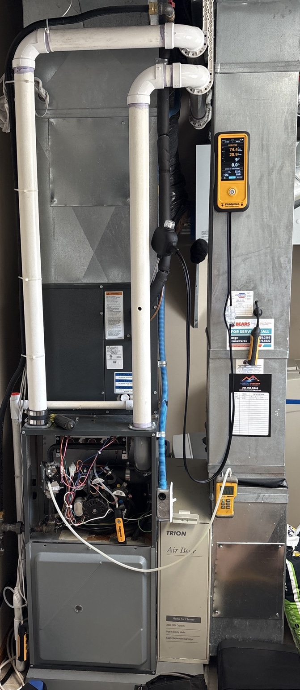

Actual furnace tune-up and safety testing performed by Comfort Dynamics.
Furnace Tune-Up for Fargo-Moorhead Winters
A furnace can be running and still have problems that are easy to miss. A seasonal tune-up gives you a better picture of how the system is operating before the coldest weather arrives.
What’s included in the $185 furnace tune-up?
- Combustion analysis
- Furnace safety testing
- Overall heating operation check
- Visual inspection for accessible furnace concerns
- Check for obvious airflow or filter concerns
- Clear explanation of any issues found
Why Combustion Analysis Matters
Combustion analysis uses actual operating measurements to help evaluate how the furnace is burning and venting. It adds useful information to the safety check instead of relying only on a visual inspection.
When Should You Schedule a Furnace Tune-Up?
Before heating season is ideal, but a tune-up can be useful any time you want the furnace checked before relying on it through a Fargo-Moorhead winter. It is also a good idea when a furnace has not been serviced recently.
Serving Fargo, Moorhead & Nearby Areas
Comfort Dynamics provides furnace tune-ups for homeowners in Moorhead, Fargo, West Fargo, Dilworth, Glyndon, and nearby communities.
Furnace Tune-Up FAQs
How much is a furnace tune-up?
Our furnace tune-up is $185 per furnace.
Does the tune-up include combustion analysis?
Yes. Combustion analysis and furnace safety testing are included in the $185 service.
What happens if you find a repair is needed?
We’ll explain what we found and provide repair pricing separately before doing additional repair work.
When should I have my furnace serviced?
Before the heating season is a good time, especially if the furnace has not been checked recently.